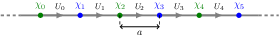

Lattices
Any calculation in Schwinger.jl will start with a SchwingerLattice. The number of sites N and number of flavors F are type parameters. Other parameters can be specified as keyword arguments:
periodic: whether the lattice is periodicq: the integer charge of the fermionsθ2π: the $\theta$-angle (divided by $2\pi$)a: the lattice spacing (in coupling units)m: the physical mass (in coupling units); the mass shift is applied automaticallymlat: the mass parameter in the Hamiltonianmprime: the coefficient of the hopping-type mass term
The sites of the lattice are indexed from 1 to N. The electric field operators are laid out as in the diagram below.

Here $\alpha = 1,\ldots,F$ is a flavor index.
For details of how these parameters enter into the Hamiltonian, see here.
Schwinger.SchwingerLattice — TypeSchwingerLattice{N,F}(;kwargs...)
Constructs a SchwingerLattice for the Schwinger model.
Arguments
periodic::Bool=false: Whether the lattice is periodic.q::Int=1: Charge.L::Union{Nothing,Real}=nothing: Length of the lattice.a::Union{Nothing,Real}=nothing: Lattice spacing.m::Union{Real,NTuple{N,Real},NTuple{F,Real},NTuple{N,NTuple{F,Real}}=0.: Mass parameter.mlat::Union{Nothing,Real,NTuple{N,Real},NTuple{F,Real},NTuple{N,NTuple{F,Real}}=nothing: Local mass parameter.mprime::Union{Real,NTuple{N,Real},NTuple{F,Real},NTuple{N,NTuple{F,Real}}=0.: Prime mass parameter.θ2π::Union{Real,NTuple{N,Real}}=0.: Theta angle.
Returns
A SchwingerLattice object.